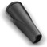

Excelente desempenho
1200W de potência, ótima aspiração com baixo consumo de energia.
Nova versão
mais leve
Com apenas 3,6kg,
maior agilidade na
hora da limpeza
Máxima eficiência em aspiração
Aspira sólidos e todos os tipos de líquidos, exceto os inflamáveis. Aspira até lama e ajuda a desentupir pias.

Praticidade: 6,2 metros de alcance
Aspira mais áreas com menos trocas de tomada!
Função sopro
Facilidade na hora de encher balões, colchões de ar, acender churrasqueira e muito mais.
Controle manual
de sucção
É possível controlar a força de aspiração de acordo com a superfície aspirada. Auxilia na limpeza de objetos e tecidos delicados sem danificá-los.
Sistema By Pass,
proteção do motor
Evita o superaquecimento, prolongando
a vida útil do aspirador.
Conjunto completo de acessórios: Possibilitando a limpeza de todos os lugares da casa.
Bocal para pisosProjetado para ser usado em carpetes, tapetes e pisos frios. |
|
|  |
Bocal para cantos e frestasProjetado para aspirar locais de difícil acesso, como frestas e cantos de sofá. |
 |
Tubos prolongadores plásticosProjetados para aumentar o alcance do aspirador em pisos, tetos e cortinas. |
Filtro permanente em poliuretano, sem odores após o uso
Seca rapidamente, evitando mau cheiro. Melhor para a saúde: evita a proliferação de bactérias.
Aspirador com saco coletor descartável:
- Mantém a garantia do aspirador;
- Mais higiênico, sem contato
com o pó; - Melhor filtragem do ar;
- Evita a proliferação de bactérias;
- Maior cuidado e durabilidade do motor do produto;
- Sacos Originais Electrolux:
fáceis de usar.
Assista ao vídeo do produto
Embalagem
- 1 Aspirador Água e Pó Acqua Power AQP20
- 1 bocal para pisos
- 1 bocal para cantos e frestas
- 2 tubos prolongadores plásticos
- Manual de instruções
- Garantia do produto
Especificações técnicas
- Altura: 520mm
- Largura: 330mm
- Profundidade: 330mm
- Peso líquido: 3.6kg